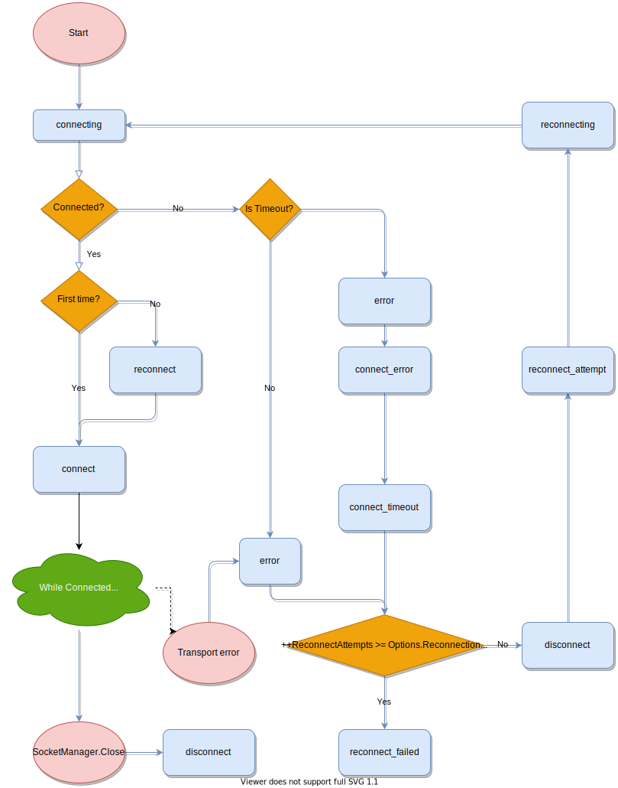
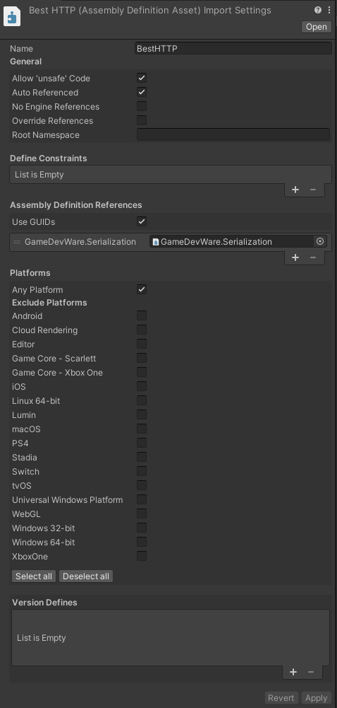
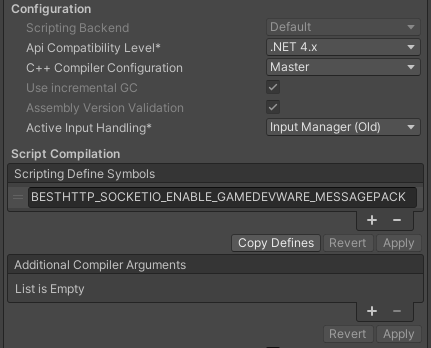

Socket.IO 3
Changes made in Socket.IO v3 (and Engine.IO v4) enables a less complex parser and message sending logic. To make the plugin's Socket.IO implementation a more user-friendly API with strongly typed callbacks, keeping backward compatibility became unaccomplishable. Breaking the backward compatibility however enabled to add even more features like volatile emits and new parsers.
The old implementation is still available in the package, but with Socket.IO 3, i recommend to use classes from the new BestHTTP.SocketIO3 namespace.
Notice
Compatible with Socket.IO 4 too as Socket.IO 4 contains no protocol related changes.
Connecting to a Socket.IO service
First step to connect to a Socket.IO server is to create a SocketManager instance:
using BestHTTP.SocketIO3;
var manager = new SocketManager(new Uri("http://localhost:3000"));
The official Socket.IO server implementation binds to the /socket.io/ path, and the client going to append it to the uri if the uri's path part isn't present.
By default SocketManager going to start to connect to the server as soon as a namespace is accessed through its Socket property or GetSocket function:
using BestHTTP.SocketIO3;
var manager = new SocketManager(new Uri("http://localhost:3000"));
// Accessing the root ("/") socket
var root = manager.Socket;
// or calling GetSocket triggers the connection procedure.
var customNamespace = manager.GetSocket("/my_namespace");
// At this point the manager already started to connect to the server
This auto connection can be disabled through a SocketOptions instance:
using BestHTTP.SocketIO3;
SocketOptions options = new SocketOptions();
options.AutoConnect = false;
var manager = new SocketManager(new Uri("http://localhost:3000"), options);
var root = manager.Socket;
var customNamespace = manager.GetSocket("/my_namespace");
// AutoConnect is turned off, Open must be called
manager.Open();
This way the SocketManager going to start to connect to the server when its Open function is called.
Open and connection to the server in general is non-blocking, the function returns immediately and messages are sent only after the connect event.
Warning
Don't forget that the new implementation is under the BestHTTP.SocketIO3 namespace!
Socket IDs
As of Socket.IO 3 the connection has an ID and all namespaces (sockets) has a different one too. The connection's ID can be accessed through the SocketManager’s Handshake property:
var manager = new SocketManager(new Uri("http://localhost:3000"));
manager.Socket.On("connect", () => Debug.Log(manager.Handshake.Sid));
Per-socket ID is received when the socket is connected, can be accessed through the connect event as a parameter, or later through the socket instance:
manager = new SocketManager(new Uri("http://localhost:3000"), options);
manager.Socket.On<ConnectResponse>(SocketIOEventTypes.Connect, OnConnected);
void OnConnected(ConnectResponse resp)
{
// Method 1: received as parameter
Debug.Log("Sid through parameter: " + resp.sid);
// Method 2: access through the socket
Debug.Log("Sid through socket: " + manager.Socket.Id);
}
ConnectResponse's sid and Socket's Id is the same value.
Notice
ConnectResponse can be found in the BestHTTP.SocketIO3.Events namespace.
Disconnecting
SocketManager's Close function closes all sockets, shuts down the transport and no more communication is done to the server. Calling Disconnect on a socket disconnects only that socket, communication through other sockets are still possible. Disconnecting the last socket closes the SocketManager too.
Subscribing to events
Subscribing to Socket.IO events can be done through the On and Once functions. There's also an ExpectAcknowledgement function that can be used to define a callbacks that going to be called when the server executes a callback function.
Parameterless events
All functions to subscribe to events support parameterless events. These events aren't expects any parameters from the servers:
manager.Socket.On("connect", () => Debug.Log("connected!"));
Strongly typed events
Both On and Once can accept numerous type parameters and tries to parse the received event to match these types. For example the following call on the server:
socket.emit('message', 0, 1);
Thi event can be caught with the followin subscription on the client:
manager.Socket.On<int, int>("message", (arg1, arg2) => Debug.Log($"{arg1}, {arg2}"));
Here we subscribe to the event called "message", expecting two int parameters.
Complex objects can be sent and subscribed to (Server):
socket.emit("user-info", {
users: ["User 1", "User 2"],
buff: Buffer.from([9, 8, 7, 6, 5, 4, 3, 2, 1])
});
(Client:)
class UserInfo
{
public string[] users;
public byte[] buff;
}
manager.Socket.On<UserInfo>("user-info", OnUserInfo);
private void OnUserInfo(UserInfo userInfo)
{
Debug.Log($"user-info: {string.Join(",", userInfo.users)}, buff: {userInfo.buff.Length}");
}
By default any additional fields that present in the receiving type that has no corresponding field in the json going to be initialized to its default value.
Binary data can be sent alone too (Server):
socket.emit('binary', Buffer.from([9, 8, 7, 6, 5, 4, 3, 2, 1]));
(Client:)
manager.Socket.On<byte[]>("binary", OnBinaryMessage);
private void OnBinaryMessage(byte[] buffer)
{
Debug.Log("OnBinaryMessage: " + buffer.Length);
}
Inject SocketManager and Socket as callback parameters
While the client parse the parameters it can inject the SocketManager or the receiving Socket instance (Server) into the parameter list:
socket.emit('binary', Buffer.from([9, 8, 7, 6, 5, 4, 3, 2, 1]));
(Client:)
manager.Socket.On<SocketManager, Socket, byte[]>("binary", OnBinaryMessage);
private void OnBinaryMessage(SocketManager manager, Socket socket, byte[] buffer)
{
Debug.Log("OnBinaryMessage: " + buffer.Length);
}
Acknowledgements
With ExpectAcknowledgement we can set a callback that's going to be called (Client):
class ReturnVal
{
public int code;
public string msg;
}
manager.Socket.ExpectAcknowledgement<ReturnVal>(OnAcknowledgements).Emit("chat message", "msg 1");
private void OnAcknowledgements(ReturnVal value)
{
Debug.Log($"{value.code}, '{value.msg}'");
}
(Server:)
socket.on('chat message', (msg, ack_callback) => {
ack_callback({ code: 102, msg: 'ok ' + msg });
});
Special Events
connect and error events are special as their type parameters are already defined. connect emits a ConnectResponse object that have only one field sid:
manager.Socket.On<ConnectResponse>(SocketIOEventTypes.Connect, OnConnected);
void OnConnected(ConnectResponse resp)
{
Debug.Log("Connected sid: " + resp.sid);
}
Specifying a different type parameter for connect will produce an error.
On the other hand, while error has a predefined Error type with a message property a new, custom error type can be created and used.
For example a server side middleware might want to send additional data other than just a plain text:
io.use((socket, next) => {
const err = new Error("not authorized");
err.data = { content: "Please retry later", code: 101 };
next(err);
});
class ErrorData
{
public int code;
public string content;
}
// Error already defines the message property
class CustomError : Error
{
public ErrorData data;
public override string ToString()
{
return $"[CustomError {message}, {data?.code}, {data?.content}]";
}
}
manager.Socket.On<CustomError>(SocketIOEventTypes.Error, OnError);
void OnError(CustomError args)
{
Debug.LogError(string.Format("Error: {0}", args.ToString()));
}
Sending Events
Sending an event can be done with the Emit function:
manager.Socket.Emit("chat message", "msg 1");
Its first parameter is the name of the event, followed by any number of parameters.
Volatile Events
A volatile event isn't sent when the client can't send it right there. When no transport is ready to send a volatile event, instead of buffereing to send it later it's going to be discarded. An event can be marked as volatile by calling Volatile() on the socket first:
manager.Socket.Volatile().Emit("chat message", "msg");
Namespaces
SocketManager's Socket property is bound to the root ('/') namespace. Every subscription and event sent through this is sent to the root namespace. New namespaces can be accesses and connected to through the GetSocket function:
manager.GetSocket("/customNamespace").On(SocketIOEventTypes.Connect, OnNameSpaceConnected);
Rooms
Rooms are completely server-side features, no client support required!
Options
You can pass a SocketOptions instance to the SocketManager’s constructor. You can change the following options:
- AdditionalQueryParams: Additional query parameters that will be passed for accessed uris. If the value is null, or an empty string it will be not appended to the query only the key. The keys and values must be escaped properly, as the plugin will not escape these.
SocketOptions options = new SocketOptions();
options.AdditionalQueryParams = new PlatformSupport.Collections.ObjectModel.ObservableDictionary<string, string>();
options.AdditionalQueryParams.Add("token", "< token value >");
var manager = new SocketManager(new Uri("http://localhost:3000"), options);
- Reconnection: Whether to reconnect automatically after a disconnect. Its default value is true.
- ReconnectionAttempts: Number of attempts before giving up. Its default value is Int.MaxValue.
- ReconnectionDelay: How long to initially wait before attempting a new reconnection. Affected by +/- RandomizationFactor. For example the default initial delay will be between 500ms to 1500ms. Its default value is 1000ms.
- ReconnectionDelayMax: Maximum amount of time to wait between reconnections. Each attempt increases the reconnection delay along with a randomization as above. Its default value is 5000ms.
- RandomizationFactor: It can be used to control the ReconnectionDelay range. Its default value is 0.5 and can be set between the 0..1 values inclusive.
- Timeout: Connection timeout before a "connect_error" and "connect_timeout" events are emitted. It’s not the underlying tcp socket’s connection timeout, it’s for the socket.io protocol. Its default value is is 20000ms.
- AutoConnect: By setting this false, you have to call SocketManager's Open() whenever you decide it's appropriate.
- ConnectWith: The SocketManager will try to connect with the transport set to this property. It can be TransportTypes.Polling or TransportTypes.WebSocket.
- HTTPRequestCustomizationCallback: A callback that called for every
HTTPRequestthe socket.io protocol sends out. It can be used to further customize (add additional headers for example) requests. This callback is called for Websocket upgrade requests too on non-WebGL platforms. - Auth: Connecting to a namespace a client can send payload data. When the Auth callback function is set, the plugin going to call it when connecting to a namespace. Its return value going to be serialized by the Parser.
When you create a new SocketOptions object its properties are set to theirs default values.
SocketOptions options = new SocketOptions();
options.Auth = (manager, socket) => new { token = "<token>" };
var manager = new SocketManager(new Uri("http://localhost:3000"), options);
Reconnection
When there's a timeout or the transport disconnects from the server unintentionally the SocketOptions' Reconnection is true, the manager tries to reconnect to the server. Reconnect logic can be modified through SocketOptions.
Emitted events
All light blue rounded rectangles int this flow chart can be subscribed to:

As described above connect and error are special events witch means they have parameters. Other emitted events have no parameters (other than the possibility of injecting SocketManager and Socket instances):
manager.Socket.On("connecting", () => Debug.Log("connecting"));
manager.Socket.On("reconnect", () => Debug.Log("reconnect"));
manager.Socket.On("reconnecting", () => Debug.Log("reconnecting"));
// ...
Parsers
By default the SocketManager uses a JSon parser and LitJson to encode/decode objects. It's also capable to send and receive MsgPack encoded messages if the server uses socket.io-msgpack-parser.
To enable and use it, follow these steps:
- Download and import the Json & MessagePack Serialization package
- Create a new Asembly Definition file under the Plugins\GameDevWare.Serialization folder
- Locate the BestHTTP.asmdef file under the Best HTTP folder
-
Reference the newly create asmdef file and press Apply:

-
Add the BESTHTTP_SOCKETIO_ENABLE_GAMEDEVWARE_MESSAGEPACK define to the Scripting Define Symbols input under PlayerSettings/Other Settings:

-
Use the now available
MsgPackParserclass:
var manager = new SocketManager(new Uri("http://localhost:3000"));
manager.Parser = new MsgPackParser();
The MsgPackParser class can be found in the Best HTTP\Examples\Socket.IO3\Parsers\ folder.